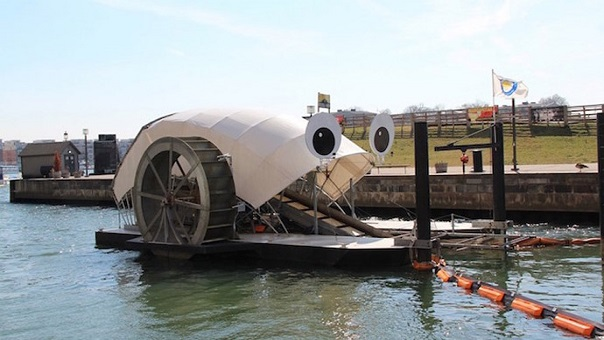

Desarrollan rueda con placa solar que traga de basura

Instalada en Baltimore, esta original herramienta con dos ruedas de paletas a ambos lados, impulsadas por la corriente del agua, recoge toneladas de desechos del río.
Fue en el año 2014 cuando este peculiar barco de nombre “Mr. Trash Wheel” comenzó a pasearse por las aguas del puerto de Baltimore, en Estados Unidos. Su objetivo, limpiar el río.
Desde entonces esta embarcación, que combina antigua y nueva tecnología, ha logrado “tragarse” más de 542 toneladas.
Mr. Trash Wheel surgió gracias a la iniciativa de la organización sin ánimo de lucro Waterfront Partnership of Baltimore. Su diseño está inspirado en los antiguos barcos de vapor y se mueve gracias a las ruedas de paleta que tiene a ambos lados y que aprovechan la propia corriente del río. Cuando la fuerza del agua no es suficiente para impulsar la embarcación, ésta consigue la energía gracias a los paneles solares que lleva incorporados en su parte trasera.
Cuando la basura se acerca al barco es recogida por un rastrillo. A continuación, pasa a una cinta transportadora desde donde se deposita en un contenedor. Finalmente los desechos extraídos del río son incinerados con la intención de generar electricidad.
Hasta el momento, Mr. Trash Wheel, que goza de una gran popularidad entre los habitantes de Baltimore, ha conseguido sacar de las aguas 367.930 botellas de plástico, 8.905.600 colillas, 251.217 bolsas de plástico, 338.079 bolsas de patatas fritas, 459.427 vasos de poliestireno, 6.394 botellas de cristal, y otros desechos.